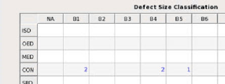

Use the Classification Filter Table in
the Defect Selection window to group defects into multiple bins
based on defect classifications.
After grouping the defects, you can filter for defects belonging
to a particular group by clicking on the group’s cell in filter
table.
Figure 1. Classification
Filter Table Tab
Procedure
- To use
the Defect Classification Table, specify classification groups from
the Row and Column pull-down
menus.
The following are the supported
classification groups for defects that can be selected for either Row or Column:
Primary
Classification
Defect Type
Classification
Defect Printability
Classification
Defect Size
Classification
SEM Classification
Defect Disposition
Defect Severity
Classification
Defect Progress Classification
Defect Source Classification
Auto Defect Type Classification
Auto Defect Printability Classification
Auto Defect Size Classification
Auto Defect SEM Classification
Auto Defect Disposition
Auto Defect Severity Classification
Auto Defect Progress Classification
For example, to filter defects with the Defect
Type Classification code CON and the Defect Size Classification
code B1. Select Defect Type Classification in
the Row pull-down menu and Defect Size Classification from
the Column pull-down.
- Click Apply to
group the defects and populate the filter table. In this example,
the classification codes for Defect Type Classification and Defect
Size Classification are selected from the dat-ini.xml file.
- Locate the filtered defects in the Defect
Size Classification Table. In this example, locate the cell with
the specified Defect Type Classification code CON and Auto Defect Size
Classification code B1. Click the cell to filter-in those defects.
Figure 2. Filtered
Defects
There are two defects in this group displayed in the Defects
List for this example.
- To remove
the applied filter, you can click the Unfilter All button.
Note: If you click any cell in the Classification Filter
Table, all previously-applied filters are cleared and the new filter
is applied.